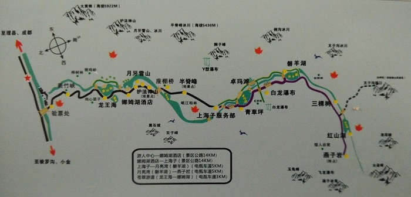
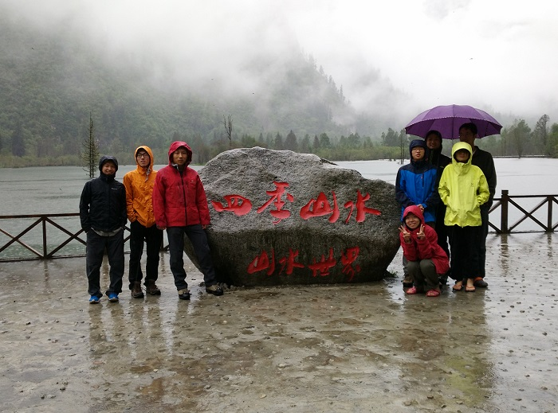
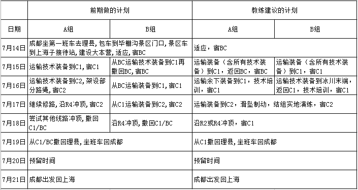
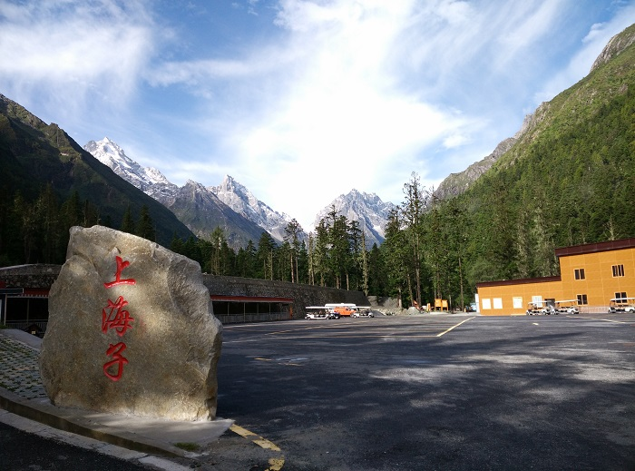
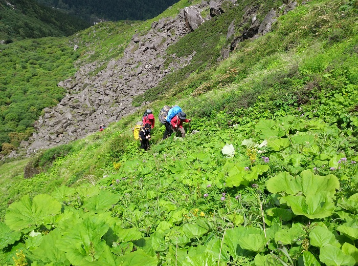
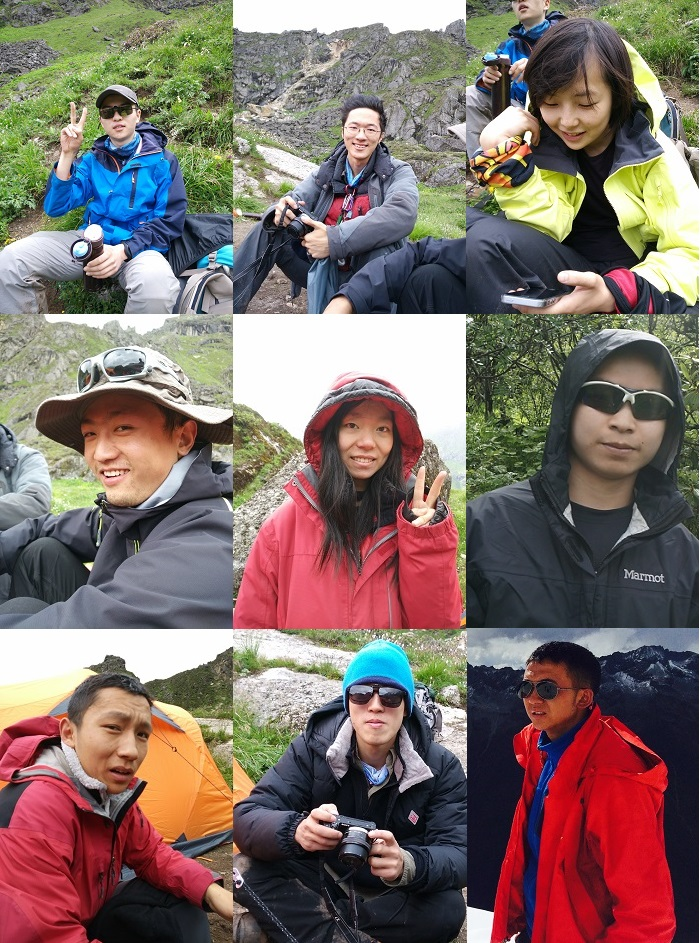
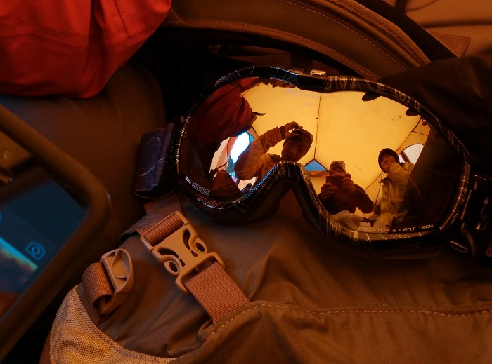

发信人: hemind(TD), 信区: outdoor
标 题: 再会半脊--半脊峰登山行记(2)
发信站: 饮水思源 (2015年10月14日01:18:33 星期三)
进山的日子
7月14日早上8点,我们在茶店子汽车站坐上大巴前往进山的第一站,理县,一路经过都江堰和
汶川.向车窗外望去,随着海拔不断爬升,公路一旁的江水越发地激烈翻滚着.我偶尔和袁航
讨论一下两侧的山峰上岩壁的可攀性,然而大部分石头都是破碎的.
半脊峰的进山是容易的,坐汽车就可以到达大本营,这也是半脊峰吸引许多登山者的原因之
一.
毕棚沟景区地图
 screen.width - 200){this.width = screen.width - 200}">
12点左右在理县接到蒋教练和王教练,简单吃过午饭,就坐上提前联系的面包车开往毕棚沟
.到毕棚沟游客服务中心办理登山手续,队员在责任告知书上签字画押.除了登山管理负责人
需要和理县文体局联系确认,手续上都很顺利,接着我们坐上景区的观光车开往大本营,上海
子接待站.
毕棚沟内某处,游览车停下来,队员们也下去透透气
 screen.width - 200){this.width = screen.width - 200}">
下午4点左右,到达上海子接待站,中雨,我们只好在接待站的员工食堂里躲一躲,为避免装备
淋湿,准备在一处板房里扎营.从平均海拔500m的成都平原到海拔3500m的大本营,气压的下
降非常明显,稍微走快一些就会喘,这正是适应的过程.
大本营条件实在太好,有热水桌椅,可以舒舒服服地做饭,进山的第一顿大家的胃口都还不错
.饭后大家坐在一起开会,和两位教练讨论了攀登计划.对比我们前期做的计划,教练的计划
能让相对较弱的B组每一天的运动量更加平均,得到较好的休息.而沿不同线路两次冲顶的计
划只能看状态了.
攀登计划的更改
 screen.width - 200){this.width = screen.width - 200}">
雨还在继续,晚上10点左右队员们收拾完纷纷入睡了.
慢慢向C1
15日一早,队员们伴着土耳其进行曲的旋律起床.窗外哗哗只是溪水的躁动,我赶紧出去看了
看,天朗气清,山峰的轮廓清晰可辨,是个出发的好日子.
上海子,好天气
 screen.width - 200){this.width = screen.width - 200}">
吃过早饭,等队员们打好包,我挨个调节了重量,8点半出发了.可能是我高估了队员的状态,
陈震浩的背包对他来说还是太重,导致了过度疲劳,这时后话.
故地重游,相比去年的紧张而又充满期待,现在的心情却是非常的平静.这一天上升1000米左
右,时间充足,我在前面把速度带得很慢很慢,均匀的速度走得非常舒服.由于去年走过,几个
休息点也都基本记得.我们走过树林,杜鹃林,草甸,走过泥泞,小溪,石海.在一块岩壁下吃过
午饭,队员们的状态都还不错,此时已经能够看到半脊冰川.
C1到C2路上的草甸
 screen.width - 200){this.width = screen.width - 200}">
记得最后一个休息点到C1稍远,有队员问我下一个休息点还有多远,我说看,翻过那块石头就
是啦.也许是累了吧,这一段稍显长一些,然而一路上坡并没有很好的休息点,最后还是在离
C1很近的地方稍稍休息了一下.
众生相(发现只能放9个人)
 screen.width - 200){this.width = screen.width - 200}">
C1营地4400米的海拔加上整个上午的负重爬升,大多数队员都有头痛头晕相伴.收拾好营地
,稍作休息,补充了水分.我,郑昌文,高鹏远和陈震浩组成A组准备回到大本营,我的判断失误
以及陈震浩对自己的状态的高估导致了后来他的下撤.在山上对自己的状态的评估的重要性
不言而喻,有时候太过坚持可能会做出错误的判断.下山很快,不到两个小时回到大本营.
晚饭的时候,陈震浩没有胃口没有吃多少东西,身体比较虚,一直喝热水也没有好转,当时判
断是太累了,准备第二天起来看看状态.
和C1的B组队员用对讲机联络,定下明日计划,A组运输余下装备,B组向上运输技术装备到冰
川末端.然而这才发现留在本营了不少路绳,导致了B组没有多少技术装备可以运输.
一晚上的休息并没有让陈震浩恢复过来,16日早上出发走了十多分钟后,为避免后面情况的
加重,考虑到整个队伍,陈震浩主动下撤了,余下三人继续运输.后发现运输这些装备3人也够
了,如果A组只有我们三人,陈震浩也许就不会下撤了.
这一天的爬升没有太多记忆,也是很慢很慢地行走,钻进C1的帐篷时B组的队员还没有全部回
来,听队员说晓远的状态有些差,此时山上是惯常的坏天气.
从C1看半脊冰川

帐篷里打发日子
 screen.width - 200){this.width = screen.width - 200}">
等队员全部回来,教练给我们做了沿路绳行军,过节点的培训,大部分算是复习.只是在牛尾
的做法上和某些细节上提出了更优的做法.在这个海拔训练并不容易,沿路绳上升一段就气
喘吁吁.期间有队员埋怨自己在学校没有学习沿路绳行军.也是我要求不够严格,在山下也没
有及时让她补回来,好在还是有一些基础.经过2-3轮的指导练习,最后队员们都能够独立地
做完一套训练.
得益于这两天的适应,队员只有轻微的头痛头晕.晚上吃过饭,又喝了不少热水.
这一夜好梦.
--
阿尔卑斯攀登是许多人类价值的综合体现，这些价值让攀登成为一种追求卓越的艺术！在所有攀登所传载的人类价值中，生是最高的价值。极端的情况下，人激发出最强烈的内在冲突，攀登使得我们更加认清生命中那些本质的要素。风险和生的意志在这项运动中扮演决定性的角色。但是，死亡永远都是失败！死亡不能被奖励，至多是吊唁。
——金冰镐奖的精神
※ 来源:·饮水思源 bbs.sjtu.edu.cn·[FROM: 58.196.144.15]
※ 修改:·hemind 于 2015年10月14日01:25:33 修改本文·[FROM: 58.196.144.15]
※ 修改:·hemind 于 2015年10月14日13:32:49 修改本文·[FROM: 58.196.144.15]
※ 修改:·hemind 于 2015年10月14日17:02:54 修改本文·[FROM: 58.196.144.15]
|